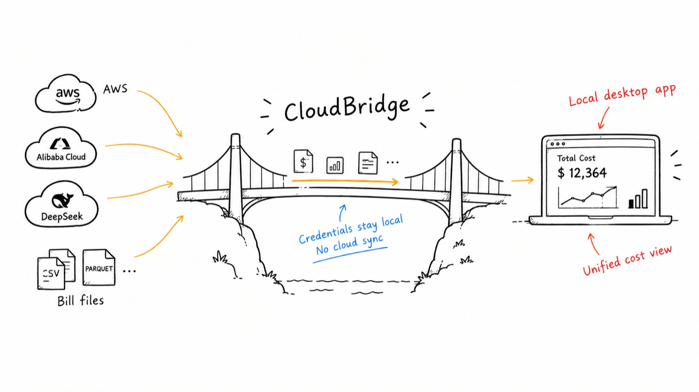

Cloud and AI costs.
One ledger.
On your machine.
CloudBridge reads your cloud and model-provider bills into one local ledger — from the billing API, or from the export you downloaded — then draws the trends. No sign-up, no sync, no telemetry.
The big picture
local-first
The dashboard
GPUI · native
Features
what it doesSix sources, one place
AWS and Alibaba Cloud provide billing APIs; DeepSeek provides a balance API. Import bill exports from Alibaba Cloud, Volcengine, OpenAI, Anthropic and DeepSeek for spending detail. Azure and Google Cloud are not currently supported.
Bring your own bill
Import a provider export into the same ledger used by API data, including model and token detail where available. Imports replace whole months for the selected account; Refresh and Force Refresh preserve them. Token-only exports remain usage records, not estimated bills.
A shared billing vocabulary
Sources normalize into a fact table named after FOCUS columns, with separate categories for usage, credits, refunds, taxes and fees. CloudBridge uses this vocabulary; it does not implement the full FOCUS specification.
Usage and net, kept apart
Explore month-to-date, rolling 30-day or 12-month trends. The headline total is net of credits, while charts, rankings and biggest movers show gross usage so credits do not hide changes in consumption.
Credentials in the OS keyring
Saved credentials live in the OS keyring, separate from the billing databases, and authenticate direct provider requests. There is no CloudBridge sync service or telemetry. Billing and raw files are local, but not encrypted by the app.
Reduce repeated API calls
A 24-hour freshness window avoids repeatedly fetching the same billing period; choose 6, 12, 24 or 48 hours in Settings. Each Cost Explorer query covers one period, so a refresh that needs several periods sends several requests. Force Refresh bypasses the window and can add provider charges.
A native desktop tool
Built on GPUI, Zed's GPU-accelerated framework, with a compact desktop interface and light and dark themes.
Rules that watch the ledger
Review unusual daily spend, low prepaid balances and a growing share of unallocated usage. Alerts include the figures behind each condition and projections where available. Rules do not run while the app is closed.
Where the money went
A Sankey from source to service to business line, with an explicit Unallocated node — the share of the bill you cannot yet explain is a number on the page, not an omission from it.
How it works
three stepsDownload & install
Download the official release for Windows x64 or macOS Apple Silicon. On macOS, drag the app from the disk image to Applications; on Windows, run the executable.
Add accounts, or a bill
For a source with a billing API, enter the credentials — they go straight into your OS keyring, never into the database. For a source you import from, there are no credentials to enter: add the account and hand it the file.
Read the ledger
Open the Overview for totals, trends and the biggest movers, over the range you pick.
Release manifest
free · open source · no accountPick your platform:
Or try the demo in your browser first — it runs on a sample bill, with nothing to install and no account.
Windows: the .exe is not code-signed, so SmartScreen will likely show “Windows protected your PC”. Check that the file came from the official Releases page, then choose More info → Run anyway. See the install guide.
macOS: Open the disk image and drag CloudBridge to Applications. Current official macOS releases are Developer ID signed and notarized. If macOS blocks a current release, report the exact warning instead of removing quarantine protection as a routine step. See the install guide.
Linux and Intel Mac builds are not published; source builds on those platforms are not guaranteed to work — see the contributing guide for prerequisites. Or browse all releases on GitHub.
FAQ
answersCan I try it before installing anything?
Is CloudBridge free to use?
How is my data secured?
Which cloud providers are supported?
Can I use a bill I downloaded instead of an API key?
What is FOCUS, and why does it matter?
What IAM permissions does CloudBridge need?
ce:GetCostAndUsage; STS account validation requires no additional permission grant. S3 exports require separate bucket permissions. Alibaba Cloud uses AliyunBSSReadOnlyAccess. An API key's permissions depend on its provider and configuration; using it for balance queries does not make it read-only. See permission templates.Does CloudBridge work on Linux?
How often is cost data refreshed?
Can I export my cost data?
raw/; see storage and backups before copying or sharing them. Reading provider exports is a separate feature: AWS Data Exports from S3 is Unreleased, and OSS collection remains on the roadmap.